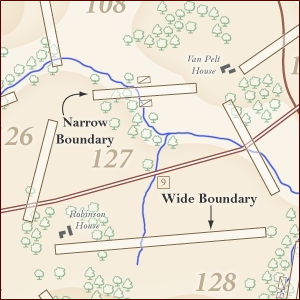
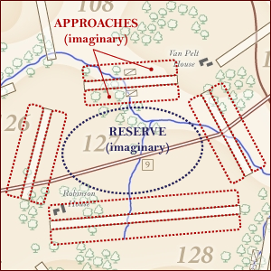
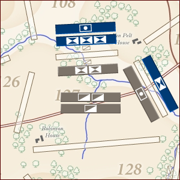

IV. In the Field: Securing Approaches & In Reserve
In Baptism at Bull Run, there are two types of commands that players can issue to their units: field commands and staff commands. This design diary entry I will cover the various field commands used in the game.
Before I introduce the field commands, however, I should to take a moment to review some of the concepts surrounding movement and unit positioning on the game board. As I indicated in one of previous diary entries, the map is divided into areas called "locales"—a convention established in Simmons Games' Bonaparte at Marengo—with each locale separated from another locale by a rectangular box called a "boundary." Each boundary (which may be one of three types as seen here) is either narrow or wide. A narrow boundary is as wide as one unit, while a wide boundary is as wide as two units placed end-to-end. In turn, each boundary has two approaches (one parallel to each long side of a boundary); an approach is an imaginary zone next to a boundary. A locale also has an area known as the reserve, which is the central area of the locale and like an approach is an imaginary region.
Examples of boundary widths and a locale's approaches & reserve follow:
|  |  |
| Narrow and wide boundaries | Visual representations of a locale's imaginary features: approaches and reserve |
A unit in play must be positioned within a locale. A unit must either be: (a) in reserve or (b) securing an approach. Units in reserve are placed generally in the center of the locale, while units securing an approach are rotated so that they are parallel to a specific boundary and placed close to that boundary.
Examples of units in reserve and securing approaches follow:
|  | In the example to the left, we see:
|
With an overview of approaches and the reserve complete, I can move on to reviewing the field commands available in Baptism at Bull Run.
In Baptism at Bull Run, I wanted to create a command system in which each type of command was used for one purpose only. Another of my design goals was to have each possible 'action' require a command to initiate, which resulted in the following field commands:
- Advance
- Assault
- Bombard
- Charge
- Maneuver
- March
Within the Field Command Phase of a turn, a player may issue any of these commands in any order. (The phases of a game turn will be covered in a future design diary entry.)
A brief summary of each field command follows:
An advance is a move into an adjacent, enemy-occupied locale by units that are securing an approach; the boundary advanced across must be unoccupied by enemy units. An advance may not be blocked and it forces units to retreat. (Retreats, withdrawals, and other morale effects will be covered in a future design diary entry.)
An assault is an attack against enemy units in an adjacent locale; both attacking and defending units must be securing approaches opposite from each other (that is, the battling units must be securing approaches on either side of the same boundary). The number of units that may directly participate in an assault (that is, lead the assault or lead the defense against the assault) is based upon the width of the boundary. An assault's outcome is based upon the strengths of the units involved in the assault. Without going in to specifics, the following affect the resolution of an assault: attacking infantry units always suffer a penalty when assaulting; attacking cavalry units suffer a penalty against defending infantry units when assaulting; and, defending artillery units may support defending infantry/cavalry units (as long as the artillery units are not already preparing to bombard). A successful assault forces units to retreat.
An artillery unit may bombard (or fire) upon an adjacent, enemy-occupied locale from an approach. Before artillery can bombard, they must range their targets. (Artillery ranging and other Administration Phase actions will be covered in a future design diary entry.)
A charge is a move and attack on a non-adjacent, enemy-occupied locale by cavalry units in reserve. A charge requires the attacking cavalry units to move two locales. A charge is hybrid action that resolves either as an advance or as an assault depending whether the charge is blocked or not. Whether successful or not (and whether blocked or not), the charging cavalry unit will be weakened by the charge.
A maneuver is a move to an adjacent, enemy-occupied locale by units in reserve; the boundary maneuvered across must be unoccupied by enemy units. A maneuver may be blocked by the enemy units (and if they do block, they must be revealed); however, if the maneuver is not blocked, then it forces units to withdraw.
A march is a noncombat-related move into a locale not occupied by enemy units. Marches come in four varieties:
- Cavalry March
- Field March
- Local March
- Road March
A cavalry march is a two locale move available only to cavalry units. A field march is a move by which units move from the reserve of one locale into the reserve of an adjacent locale. A local march is a move within a locale by units that either: move into reserve from an approach or move to secure an approach from reserve. A road march allows units in reserve to move multiple locales by using a main or local road; multiple road marches may be 'chained' together in order to move multiple groups of units in adjacent locales in a column.
A field command that did not make it into the final version of the game is the entrenchment command. Entrenchments—a command available to infantry units only—allowed players to create defensive positions that hampered road marches and added artillery penalties to the approaches they modified. However, playtesting revealed that entrenchments added little to the game; instead, they slowed the pace of the game down. Because of this, the entrenchment command was ultimately dropped.
Naturally, the preceding information is only brief introduction to the field commands available in Baptism at Bull Run. The next design diary entry will review those commands available in the third phase of a turn: the Staff Command Phase.
Released: 2008-06-09 13:45 EDT.
For questions and/or feedback, please send e-mail to: baptismatbullrun@....com (Click the hyperlink to reveal the e-mail address.)
Further discussion about Baptism at Bull Run can be found at either of these game hobbyist websites: BoardGameGeek ConsimWorld